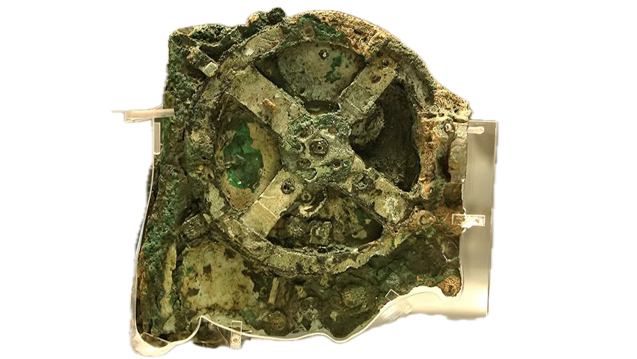
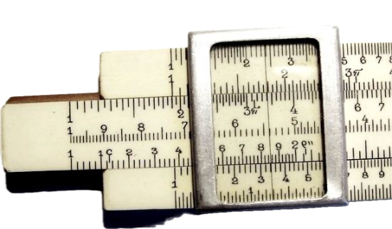

Зал 1 — Домеханическая эпоха
Здесь представлены простейшие ручные приспособления для счета и вычислений.
Абак
III век до н.э.
Семейство счётных досок, применявшихся для арифметических вычислений со времён древности во множестве цивилизаций и государств вплоть до XVIII века.
Антикерский механизм
II век до н.э.
Древнегреческий астрономический инструмент, предназначенный для моделирования движения небесных тел и предсказания астрономических событий.
Палочки Непера
1617 г.
Устройство для умножения и деления, представляющее собой набор прямоугольных палочек, на которых нанесены числа и их произведения.
Логарифмическая линейка
1622 г.
Калькулятор для выполнения математических операций, основанный на свойствах логарифмов.